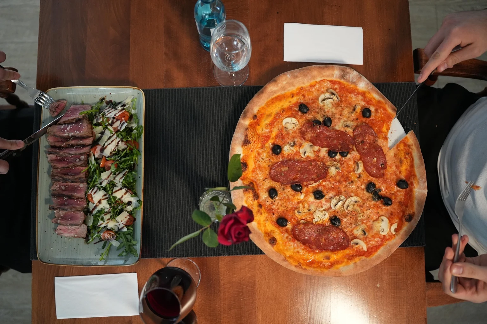
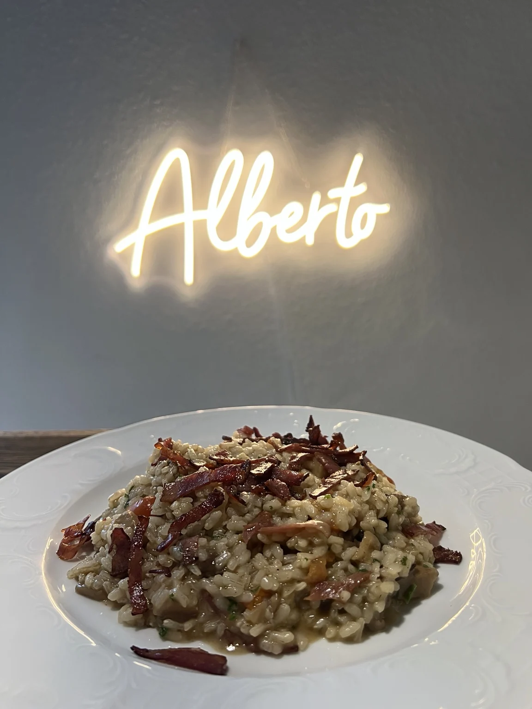

La nostra storia
Italienisch im Herzen.
Zu Hause in Weil am Rhein.
Willkommen im Ristorante Pizzeria Alberto. Seit dem 1. Juni 2023 führen wir unser Restaurant mit Freude an italienischer Küche und persönlicher Gastfreundschaft.

Mit Liebe zur Küche
Klassiker, die verbinden.
Ein gemeinsames Essen ist mehr als eine Pause im Alltag. Es ist Zeit für Gespräche, für Familie und Freunde und für Gerichte, auf die man sich freut. Genau dafür steht Alberto.
Unsere authentisch italienisch geprägte Küche reicht von Bruschetta und Antipasti über Spaghetti Napoli, Spaghetti Carbonara und Tagliatelle al Salmone bis zu Risotto mit Steinpilzen. Dazu kommen unsere Pizzen mit 36 cm Durchmesser, Steak vom Grill und Fischgerichte wie gegrillter Lachs.
Viele Gerichte und Desserts bereiten wir hausgemacht zu. Besonders unsere Ofengerichte stehen für diese Küche: Lasagne, Cannelloni mit Ricotta und Spinat sowie überbackene Pasta. Zum Abschluss laden Tiramisù und Pannacotta zum Genießen ein.

Ihr Italiener am Holzmattenweg
Einfach vorbeikommen.
Sie finden uns am Holzmattenweg 13 in 79576 Weil am Rhein, bei der Tennis- und Squashhalle. Ob zum Mittagessen, zum entspannten Abendessen oder nach dem Sport: Bei Alberto sind Sie willkommen.
Sie möchten zu Hause essen? Unser Lieferservice und die Abholung machen es einfach. Für besondere Anlässe steht unser separater Feierraum im Obergeschoss für bis zu 35 Personen zur Verfügung.
Kontakt & Anfahrt